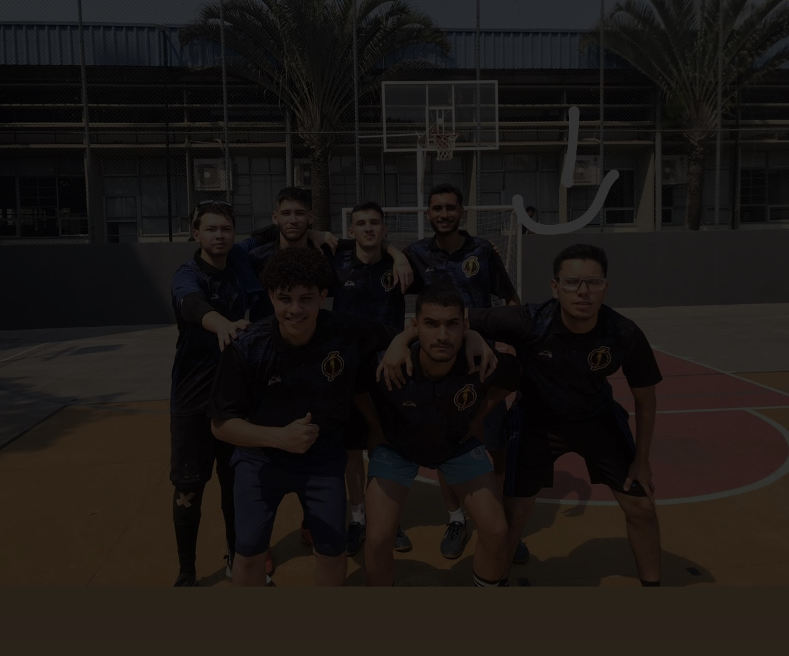
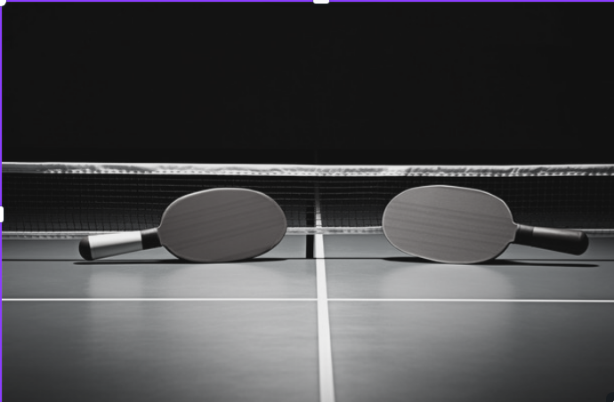

Vôlei
O Voleibol é um dos esportes mais esperados do Interclasse do SENAI. Com jogos emocionantes e disputas acirradas, as equipes demonstram trabalho em equipe, estratégia e muita garra.

O Voleibol é um dos esportes mais esperados do Interclasse do SENAI. Com jogos emocionantes e disputas acirradas, as equipes demonstram trabalho em equipe, estratégia e muita garra.
O Futsal é sempre um destaque nas competições. A velocidade das jogadas e a habilidade dos alunos transformam cada partida em um verdadeiro espetáculo de gols e dribles.
O Tênis de Mesa exige concentração e reflexos rápidos. No Interclasse SENAI, esse esporte atrai tanto jogadores quanto espectadores, com partidas de tirar o fôlego.
Este evento é realizado pela AAPM do Senai Gaspar Ricardo Jr. do Santa Rosália, Sorocaba. Uma organização de (ex)/alunos e colaboradores.
Saiba mais e se torne um contribuinte.